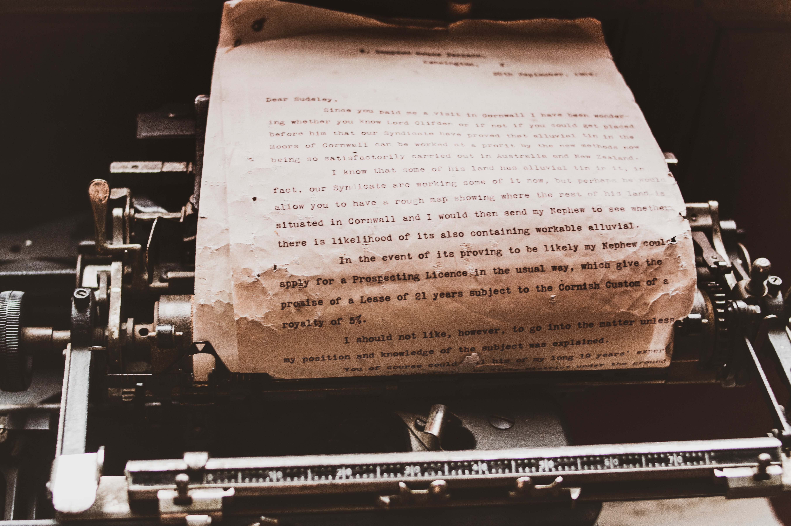

Desde os princípio, o homem teve a ideia de representar objetos imóveis ou em movimento, ele vem desenhando na superfície de vários materiais diferentes.
O homem passou a usar todo material o que a natureza te dava de graça, tais como paredes rochosas, pedras, ossos, folhas de plantas distintas, etc.

Acompanhando o desenvolvimento da inteligência humana, as representações gráficas foram se tornando cada vez mais difíceis de se compreender, sendo assim, passou a se chamar de “ideias”. Ao decorrer deste desenvolvimento, o homem passou a ser mais apto para colocar suas ideias em prática, assim como desenvolver ferramentas para seu auxílio, tanto individual como coletivo. Com esta finalidade, a história registra o uso de tabletes de barro cozido, tecidos de fibras diversas, papiros, pergaminhos e, finalmente, o papel.
O papel surgiu na China e foi inventado por Cain Lun. Para produzi-lo utilizava-se fibras de arvore e tecidos cozidos e esmagados e depois eram colocados numa peneira para secar ao Sol.
As fibras para sua fabricação requerem algumas propriedades específicas, assim como alto conteúdo de celulose, pois possui um baixo custo e é fácil de se obter, essas são algumas das razões pelas quais as matérias usadas são as vegetais. O material mais usado é a polpa de madeira de árvores, principalmente pinheiros (pelo preço e resistência devido ao maior comprimento da fibra) e eucaliptos (pelo crescimento acelerado da árvore). Antes da utilização da celulose em 1840, desenvolvida pelo engenheiro alemão Friedrich Gottlob Keller, outros materiais como o algodão, o linho e o cânhamo eram utilizados na construção do papel.
Nos últimos anos, a indústria papeleira, com base na utilização da celulose como matéria-prima para o papel, teve um avanço incrível, no entanto, as cinco etapas básicas de fabricação do papel se mantém: (Primeiro) estoque de cavacos, (Segundo) fabricação da polpa, (Terceiro) branqueamento, (Quarto) formação da folha, (Quinto) acabamento.
Para se transformar a madeira em polpa, que é a matéria prima do papel, é necessário separar a lignina, celulose e a hemicelulose que constituem a madeira. Para isso, se usam vários processos, sendo os principais processos “mecânicos e os químicos”.
Os processos mecânicos basicamente trituram a madeira, separando apenas a hemicelulose, assim produzindo uma polpa de menor qualidade, de fibras curtas e amareladas.

O principal processo químico é o kraft, que trata a madeira em cavacos com hidróxido de sódio e hidrossulfeto de sódio, que dissolve a lignina, liberando a celulose como polpa de papel de maior qualidade. O principal problema deste processo é o licor escuro, também conhecido como licor negro, que é produzido pela dissolução da lignina da madeira. Este licor deve ser tratado adequadamente devido a seu grande poder poluente, já que contém compostos de enxofre tóxicos e com odores horríveis de grande carga orgânica. O reaproveitamento desta lignina é diverso, podendo o licor ser concentrado por evaporação e usado até mesmo como combustível para produção de vapor para própria fábrica.
O branqueamento da polpa de papel infelizmente é extremamente poluente, pois costumava ser feito com cloro, gerando compostos orgânicos clorados tóxicos e cancerígenos. Atualmente o branqueamento é feito por processos sem cloro elementar conhecido como ECF do inglês "elemental chlorine free" (usam dióxido de cloro) ou totalmente livres de cloro conhecido como TCF do inglês "total chlorine free" (usam peróxidos, ozônio, etc.). Estudos apontam que o efluente que sai de ambos os processos quando tratado não possui diferença significativa quanto ao teor tóxico sendo ambos de baixíssimo impacto ambiental. Aplicações industriais têm apontado para uma redução na emissão de óxidos de nitrogênio (dióxido de nitrogênio e monóxido de nitrogênio) na mudança do processo TCF para o processo ECF.
Observação:
No início da chamada "era dos computadores", imaginava-se que o consumo do papel tivesse uma grande decaída, pois ele teria ficado ultrapassado. No entanto, esta previsão foi descartada, na prática, o consumo de papel tem sido maior e maior ao decorrer do tempo.
É fato que os escritórios têm consumido muito mais papel após a introdução de computadores no mundo. Isso pode ter ocorrido por conta de algumas ações que os computadores utilizam, talvez tenha sido o acesso à informação que aumentou muito (aumentando a oferta de informações, aumenta também a demanda), quanto pela facilidade do uso de computadores e impressoras, o que permite que o uso do papel utilizado em impressões seja mais rápido e preciso do que alguns meios ultrapassados (escrever à mão, ou à máquina datilográfica que exigia muito mais esforço, diminuindo a demanda de gastar papel com materiais inúteis).
De fato, a porcentagem de papéis impressos que nunca serão lidos é bastante alta na maior parte dos escritórios (especialmente os que utilizam “impressoras a laser” (as quais imprimem uma grande quantidade de páginas por minuto). “Seu tempo de decomposição seria em torno de seis meses”, talvez seja um ponto positivo comparando com toda essa negatividade de seu próprio processo de produção além dele ser 100% reciclável por ele poder ser fabricado exclusivamente com fibras secundárias por causa da celulose encontrada em seu composto.